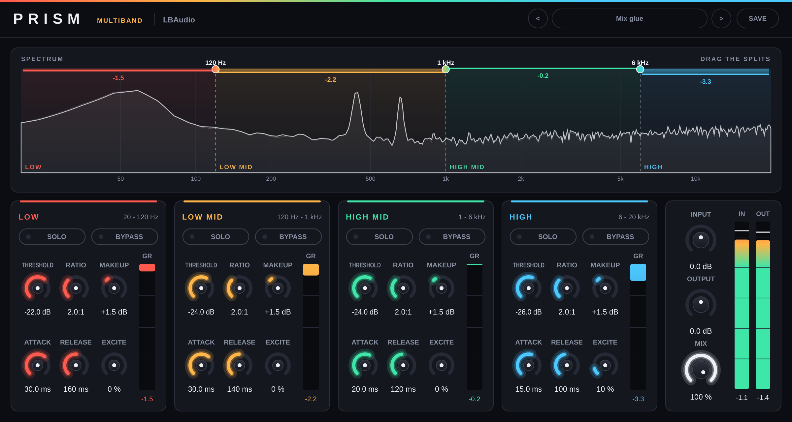

Multiband compressor · VST3 & AU
Prismby LBAudio
Splits your sound into four bands and gives each one its own compressor and exciter, so you can hold the low end steady, smooth the harsh middle and add air on top, all at once.
Instant download. Any local VAT is worked out at checkout.
- VST3
- AU
- Windows
- macOS
- Linux
- Presets

Hear it on a real track
Three of Prism's factory presets, on a full band mix, a beat and a house vocal. Each version is matched to its original's loudness, so you hear what changed in the balance, not a change in volume. Flip between Original and Prism while it plays.
The Mix glue preset on a full band mix: every band compressed gently on its own, so the low end can't pump the vocal and the cymbals, with a touch of air from the High band's exciter.
Watch it work
The real plugin on screen, on one of our tracks. Every before-and-after is matched in loudness, so you hear what Prism does, not a change in volume.
Four bands, each with its own job
The spectrum shows the four bands in their own colours, how far each one is being turned down, and the three split points. Drag a split to move the bands.
A compressor in every band
A boomy bass note turns down only the bass; the vocal and the cymbals don't duck with it. Each band has its own threshold, ratio, attack, release and makeup.
An exciter in every band
Excite adds harmonics made from that band alone: air from the highs, presence from the mids, and weight from the lows that you can hear on a phone speaker.
Presets to start from
Factory presets for the mix bus, beats, vocals, instruments and mastering, plus Save for your own. Step through them with the arrows while the track plays.
The controls
Each band has its own Threshold, Ratio, Attack, Release, Makeup, Excite, Solo and Bypass; the splits, Input, Output and Mix are for the whole plugin. Double-click any knob to reset it, or click a value and type one in.
| Control | Range | What it does |
|---|---|---|
| Low / Mid / High Split | 40 Hz to 16 kHz | Where the four bands meet. Drag the handles on the spectrum, or double-click one to reset it. |
| Threshold | −60 to 0 dB | The level above which that band is turned down. A 6 dB soft knee keeps it smooth. |
| Ratio | 1:1 to 20:1 | How hard the band is turned down once it goes over. |
| Attack | 0.1 to 200 ms | How fast it reacts. Slower lets the front of each hit through. |
| Release | 5 ms to 2 s | How fast it lets go. |
| Makeup | −12 to +24 dB | The band's level afterwards: use it to rebalance the bands as well as to make up. |
| Excite | 0 to 100 % | Adds harmonics made from that band only. It follows the band's level, so quiet parts get the same colour as loud ones. |
| Solo / Bypass | On / off | Solo to hear one band (or several) on its own. Bypass leaves a band untouched. |
| Input / Output | −24 to +24 dB | The level into and out of Prism. |
| Mix | 0 to 100 % | Blends in the original. It's phase-matched to the bands, so any blend stays clean. |
Where to start
Four starting points. Set these, then adjust by ear.
-
Mix bus glue
Preset Mix glue · or every band 2:1, thresholds set so each shows 1–3 dB
Holds a mix together without the whole thing pumping on every kick.
-
808 that cuts through
Preset 808 weight · Low split 80–110 Hz · Low excite 50–70 %
The sub stays steady, and its harmonics carry it on small speakers.
-
Harsh vocal, smoothed
Preset Smooth vocal · High Mid 3:1, fast attack, splits around 2.5 and 8 kHz
Turns the harsh notes down only when they happen, which an EQ cut can't do.
-
Master with air
Preset Master polish · 1.5:1 everywhere · High excite 15–25 %
Gentle control across the range, and a little extra sheen on top.
Specs
One download for each system. No iLok, no account and no activation.
- Formats
- VST3 on Windows, macOS and Linux. Audio Unit (AU) on macOS.
- Windows
- Windows 10 or later, 64-bit.
- macOS
- macOS 10.13 or later. Runs natively on Apple Silicon and Intel.
- Linux
- 64-bit x86 (x86-64).
- Hosts
- Any DAW that loads VST3 or AU plugins, such as Ableton Live, FL Studio, Cubase, Reaper, Studio One, Bitwig and Logic Pro. Not available for Pro Tools (AAX).
- Latency
- 61 samples (about 1.3 ms at 48 kHz) from the 4x oversampling, reported to your DAW so everything stays in time.
- Bands
- Four, split by 24 dB/octave Linkwitz-Riley crossovers. With nothing set, they add back up to a flat response.
- Presets
- Factory presets in five groups (mix bus, beats, vocals, instruments, mastering), plus your own, saved as files you can copy to another computer.
- Channels
- Mono or stereo.
Questions
Anything else? Email support@lbaudio.co.uk.
How do I install it?
Unzip the download and copy Prism.vst3 into your VST3 folder: C:\Program Files\Common Files\VST3 on Windows or ~/Library/Audio/Plug-Ins/VST3 on a Mac. Logic users also copy Prism.component into ~/Library/Audio/Plug-Ins/Components. Then rescan plugins in your DAW. The zip includes these steps in INSTALL.txt.
How many computers can I use it on?
All the computers you personally own or use. See the licence agreement for the details.
Can I use it on commercial releases?
Yes. The music you make with Prism is entirely yours, with no royalties or credits owed.
Do updates cost anything?
No. Updates to Prism version 1 are free for everyone who bought it.
What if it doesn't work on my system?
Get in touch within 14 days of buying. If we can't get it working, you get a full refund. See the refund policy.
Does it work in Pro Tools?
Not yet. Pro Tools only loads AAX plugins, and Prism is VST3 and AU.
Where are my presets saved?
In an LBAudio/Prism/Presets folder: in Application Support in your user Library on a Mac, in AppData\Roaming on Windows and in ~/.config on Linux. Choose "Open your presets folder" in the preset menu to go straight there.
How is Excite different from an EQ boost?
An EQ boost turns up what's already there. Excite adds new harmonics above the notes in that band, so a dull or quiet part gains brightness or weight that an EQ can't find.
Prism
VST3 & AU for Windows, macOS and Linux. Instant download.